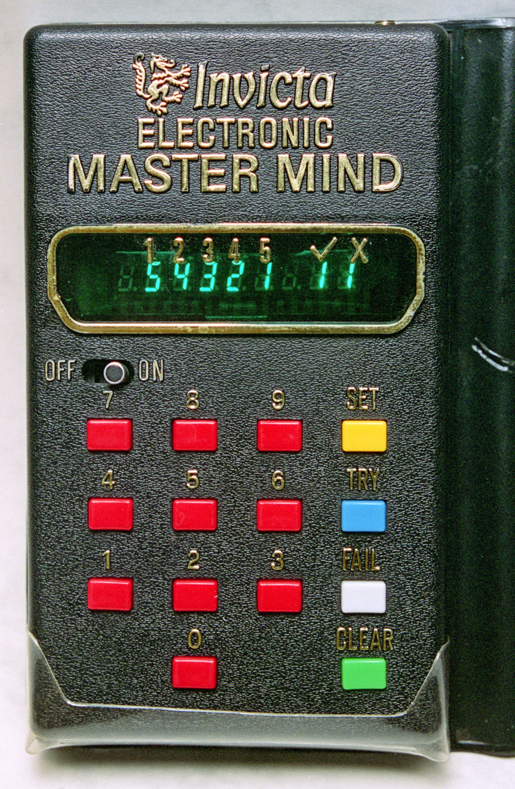
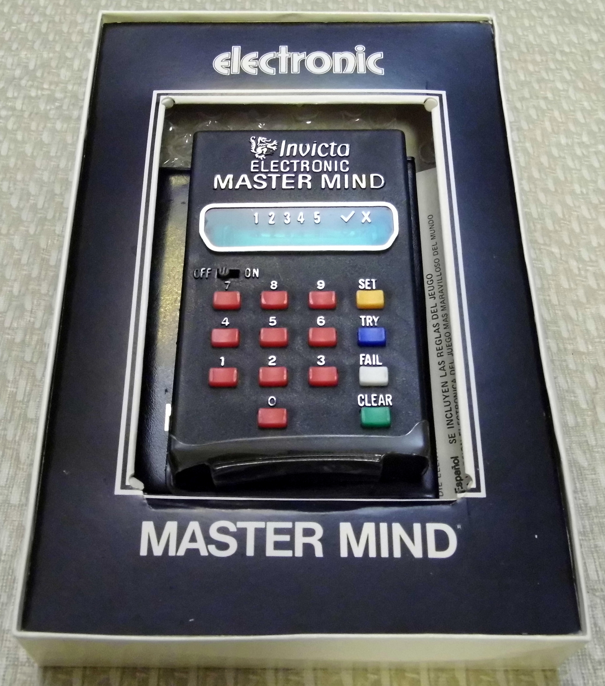
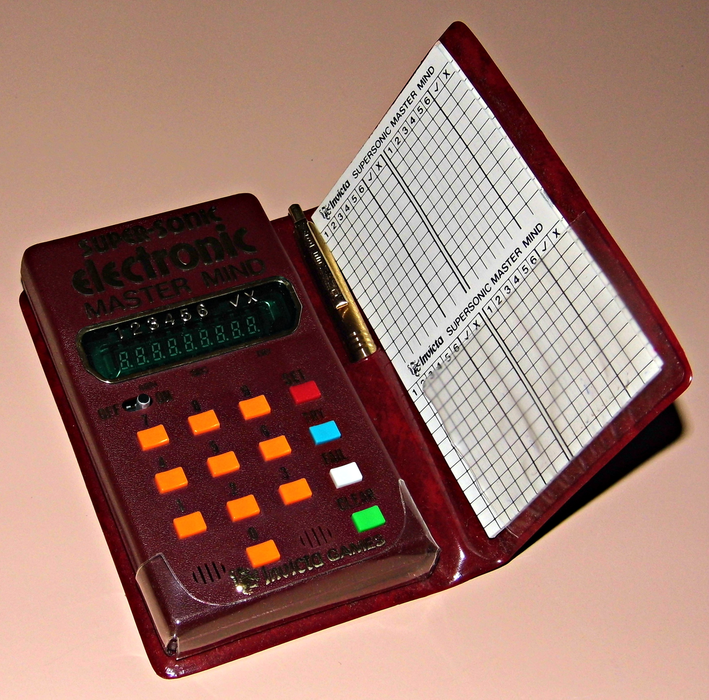

Invicta Electronic Master Mind
Interrogate the computer's hidden number until it cracks

Overview
Invicta Plastics, the English company that held the rights to Mastermind after acquiring it from inventor Mordecai Meirowitz, released the Electronic Master Mind in 1977 — a handheld electronic version of the code-breaking game. Where the board game used colored pegs and a shielding cover, the electronic version used numbers: the machine secretly selects a code of three, four, or five digits (from ten possible digits), and the human plays the code-breaker, entering guesses on a small keypad. The unit responds only with coded verdicts — the classic 'black and white key pegs' translated into LED feedback — counting correct digits and correct digits in the right position. It plays solo or with multiple players, always against the computer.
The interaction model is the point: one of the earliest mass-market consumer toys in which the machine is the code-maker — it holds the hidden state and the human is reduced to an interrogator. You cannot see inside; you can only ask questions (guesses) and read the machine's terse scored answers, iterating until the LED verdict declares the code broken. The play is pure information-theoretic deduction — Donald Knuth had published his optimal five-guess strategy for Mastermind in a 1976 paper literally titled 'The Computer as Master Mind.' The Invicta Electronic Master Mind was the same idea made into a handheld you could buy in a toy shop, a year before Simon shipped and two before Merlin bundled its own Mastermind-style game as one of six.
A 1979 follow-up, the Super-Sonic Electronic Master Mind, kept identical gameplay and added a sixth digit for longer codes, an audible signal when the correct code was tried, a 'Fail' key that revealed the secret code on request, and a display of the elapsed time and number of tries taken to reach a solution. The units were manufactured in Hong Kong and sold worldwide under the Invicta Games brand. The version is documented on the Wikipedia Mastermind page's variation table and in surviving collector photographs.
Deep dive
The defining inversion: in the peg-board game, a human opponent sets the secret pattern behind a shield. In the electronic version, the machine sets the secret. The unit holds a 3-5 digit number in its electronics, generated at the start of each game, and the player never sees it — only the scored verdicts of each guess. This makes the toy one of the earliest consumer products in which a computer occupies the adversarial role: not a tutor, not a referee, but the hidden mind you are trying to break.
Input is a numeric keypad; output is LED verdicts. The player types a guess, and the machine replies with the same scoring logic as the board game: a colored signal for each digit correct in value and position, a white-equivalent signal for each digit correct in value but misplaced, nothing for wrong digits. The vocabulary of feedback is deliberately impoverished — enough information to solve the code in principle, never enough to see it. The unit is a black-box oracle: ask, listen, deduce.
Donald Knuth's 1976 paper 'The Computer as Master Mind' proved that the code-breaker can always win in five moves with a minimax strategy over the 1,296 possible codes. The Invicta Electronic Master Mind, released the following year, is the same computational relationship made tangible: a consumer device whose entire job is to hold a secret and grade interrogations. The toy predates the era's famous electronic memory games yet is closer in spirit to a cryptographic challenge-response than to Simon.
The 1979 Super-Sonic Electronic Master Mind extended the code to six digits and added the audio dimension: a tone when the correct code is tried, plus a 'Fail' key that gives up and reveals the secret, and a display of elapsed time and guess count. Where the original communicated strictly through LEDs, the Super-Sonic version let the machine speak its verdicts — a small but real step toward the talking games that followed.
Team & pioneers
- Invicta Plastics. English toy company near Leicester that acquired Mastermind rights from inventor Mordecai Meirowitz; Edward Jones-Fenleigh, the founder, refined the game. Released the Electronic Master Mind in 1977.
- Mordecai Meirowitz. Israeli inventor of Mastermind (1970), which the electronic version adapts.
- Donald Knuth. Published 'The Computer as Master Mind' (1976), proving the code-breaker can win in five moves — the mathematical framing the electronic toy embodies.
Media

